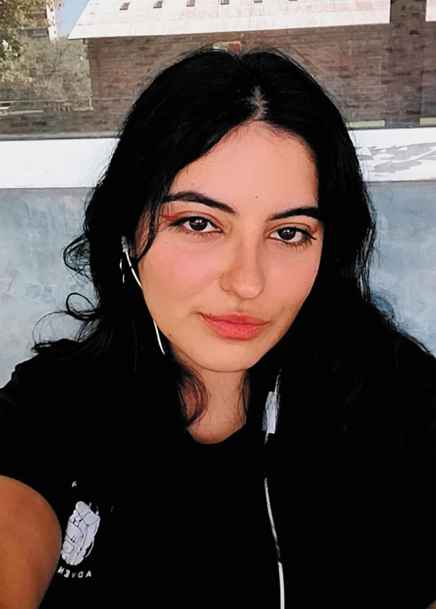

Luciana Lescano
Diseñadora gráfica en proceso
¡Holi! Soy Lu, Lula, Luli, Lucha, LALA.

Soy una estudiante de Diseño y Comunicación Visual con una mente curiosa, inquieta, caótica y un poco obsesiva con los detalles.En el último tiempo descubrí que me cuesta la monotonía, así que estoy en constante busqueda de nuevas ideas, explorando, probando y reinventando lo que hago. Vengo de una familia muy creativa, soy hija de una profe de arte y un casi arquitecto, asi que desde chiquita sabía que mi rumbo en la vida iba por ahí. Me pasaba el dia dibujando, pintando todo lo que veía y creando los muebles y deco de mi casa de muñecas, sin saber que ya estaba empezando a construir mi ojito diseñador.
Herramientas
Educación
- Bachiller en economía y administración de empresas - Inst. San José (2021)
- Lic. en Diseño y Comunicación Visual - UNLa (2022-Actualidad)
Hobbies
Amo pasar horas explorando estilos visuales en redes, mientras escucho música que me levante el ánimo, generalmente bandas rock o alternativas en inglés. Además tengo una mente un poco rara y necesito ver series en todo momento incluso si solo sea escucharlas para poder concentrarme en lo que hago, mi cerebro necesita recibir estimulos de todos lados.
Aspiraciones
Si bien la mayoría de mis proyectos, tanto académicos como profesionales, son relacionados al diseño de identidades, me gustaría especializarme principalmente en el diseño editorial aunque actualmente no tenga mucha experiencia en ese rubro.